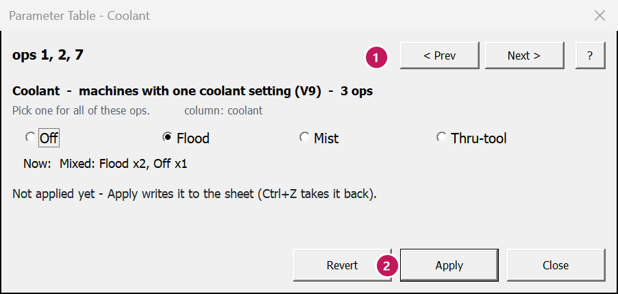

Coolant
Ribbon: Parameter Table tab › Selected ops › Coolant
What this is for
Shows the coolant of the ops you selected and sets it for all of them at once. It works for both ways a Mastercam machine can be set up for coolant:
- One setting per op (“V9” coolant):
Off,Flood,MistorThru-tool. Columncoolant. - Before / with / after the move (“X-style” coolant), using your machine's own coolant names.
Columns
coolant_before,coolant_with,coolant_after. Each can hold more than one coolant.
Each op follows its own machine, so one part can have both kinds.
When to use it
- A program came over with coolant off on cutting ops.
- You want thru-tool on all the drills, or mist instead of flood on a whole group.
Steps
- Select the ops – any cell in their rows. (Or select coolant cells and click Set: it opens this window too.)
- Click Coolant. The sheet jumps to the coolant columns, so you see what is set now.
- Read what is set now. If the ops differ, it says how, e.g.
Mixed: Flood x2, Off x1
. - Pick the coolant.
- One setting (V9): pick Off, Flood, Mist or Thru-tool for all of these ops.
- Before / with / after the move (X-style): a grid of your machine's coolants. Tick the ones to turn on. A grey box means some of the ops have it and some do not – leave it grey and each op keeps its own.
- Click Apply. Only what you changed is written. Ops it could not set are listed, with the reason.
The window stays open beside the sheet and follows the ops you click (unless you have changed something you have not applied). Ctrl+Z takes back the whole Apply.


Worked example
On the Oil Spool Head, the prime turning ops (2, 3, 4, 5, 6) run with coolant Off. The others run
Flood. You want flood on the two roughs, ops 2 and 3.
- Select a cell in op 2's row and op 3's row.
- Click Coolant. It shows
Now: Off
(both the same). - Pick Flood, click Apply.
| Op | coolant before | coolant after |
|---|---|---|
| 2 Prime Turn Rough OD | Off | Flood |
| 3 Prime Turn Rest Rough OD | Off | Flood |
Coolant does not change the cycle time estimate. It is listed in the load preview like any other change.